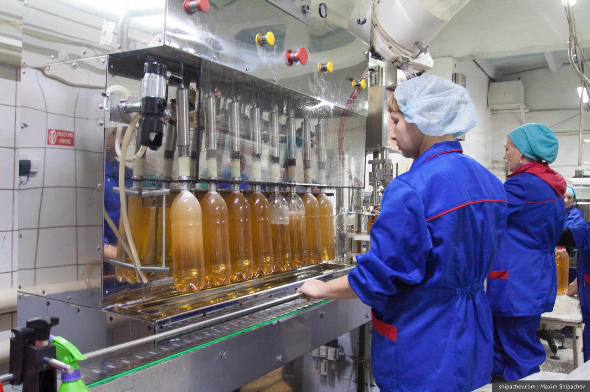

Экскурсия на пивзавод в Калинкино для меня стала следствием знакомства с его продукцией в Немецкой Лавке ресторана «Мюнхен».
Тогда выяснилось, что пиво за 400 рублей литр варят там же, что и пиво, которое продают в обычных розничных точках, принадлежащих пивзаводу. Несмотря на то, что пиво из «Мюнхена» мне понравилось, многие писали, что оно ничем не отличается на вкус от обычного и переплачивать нет никакого смысла.
К тому же много лет ходят легенды о том, что настоящего пива давно никто не варит. Всё, то мы пьём — продукт разведения с водой китайского порошка с добавлением пенообразователя.
Правда ли, что для удешевления технологии пивовары используют порошки, которые просто нужно растворить? Нет!
Поэтому, чтобы получить ответ на эти вопросы, я сразу откликнулся на приглашение Александра Аксёнова.
Пивзавод «Калинкино» находится рядом с одноимённой деревней примерно в 50 километрах от Кемерова. Сама деревня находится в нескольких километрах от райцентра Промышленное. На пивзаводе сегодня трудится около 75 человек. Пиво варится круглосуточно. В месяц завод выдаёт примерно 560 тонн пива. Это меньше, чем требует рынок.
Завод не является наследником социалистического прошлого. Он начал свою работу в 1996 году. Рассказывала нам о технологии приготовления пива Ирина Геннадьевна Жихарева, технолог и директор завода. Ирина Геннадьевна занимается пивоварением уже 29 лет. Начинала свою карьеру на заводу «Пикем» в Кировском районе Кемерова, налаживала пивоварение в легендарной «Барже». Во время экскурсии показала себя по-настоящему любящим свою профессию человеком.
Как известно, для хорошего пива нужны всего 4 компонента: солод, вода, хмель и совесть пивовара. По совести все вопросы улетучились в первые минуты, поэтому мы прошли на склад, где хранится солод.
Первое открытие было в том, что пивзавод Калинкино не работает на отечественном сырье (за исключением, конечно, воды). Даже пиво за 60-70 рублей варится с использованием ингредиентов, которые закупают в Германии и Чехии.
Вкус пива во многом зависит от солода, технологии его ферментации, карамелизации и используемого сырья. Традиционно пиво делают из ячменя, реже из пшеницы.
Для приготовления пива солод крушат и разделяют на 4 фракции.
Основной (в объёмной доле) ингредиент для пива, — конечно, вода. Пивзавод «Калинкино» использует воду из артезианских скважин, которых не территории завода две. Раньше было три, но одна, в результате аварии несколько лет назад, оказалась законсервированной. Вода проходит обязательную очистку, которая включает в себя несколько этапов — механическая очистка, озонирование, обеззараживание ультрафиолетом.
Когда у нас есть вода и солод мы можем начинать варить пиво. На пивзаводе Калинкино используют пивоварни Integral. Классическая пивоварня состоит из двух частей: нижняя — заторный котёл, верхняя — фильтр-чан.
Заторный котёл — это ёмкость, в которой есть мешалка. В ней происходит процесс затирания: дроблёный солод смешивают с водой, после этого смесь нагревают до определённых температур и выдерживают определённое количество времени, чтобы активировать ферменты, которые содержатся в солоде. Таким образом получают богатое витаминами и белками сусло. Процесс затирания длится около 3 часов.
Пиво для ресторана варится одноотварочным способом. В этом случае на определённом этапе треть затора оставляют в котле, а две трети поднимают в фильтр-чан. Оставшуюся в котле часть кипятят от 10 до 50 минут, в зависимости от приготавливаемого сорта пива. Потом прокипячённую часть тоже поднимают в фильтр-чан, смешивают их и выдерживают ещё полчаса, чтобы произошло осахаривание.
За одну варку готовят сусло из тонны засыпи. В сутки завод «Калинкино» варит 4 таких варки.
Тут я задал ещё один вопрос, который меня всегда интересовал: газируют ли на заводе всё пиво?
Ни один уважающий себя пивовар не будет газировать пиво!
Выбор солода напрямую зависит от сорта пива, которое варят. Для классического лагера используют 100% светлого солода, для Монастырского складывают четыре карамельных солода, для пива Матиас Мюллер берут два светлых солода и один кислый.
Хмель тоже полностью импортный. Ирина Геннадьевна поделилась, что им посчастливилось договориться с чехами о поставке, несмотря на неурожай, 650 килограммов хмеля. Этого количества (этого сорта) заводу хватит примерно на год.
Пивзавод «Калинкино» варит сегодня 9 сортов пива для розничной сети, 4 сорта для ресторана «Мюнхен», ирландский эль и 2 сорта для ресторана находится в резерве.
Не мог я не задать вопрос «Почему у пива Гиннесс такая плотная пена», ответ оказался неожиданным. Всё дело в том, что пиво Гиннесс поставляется в бары вместе со специальным рассекателем, который вставляют в колонку. Они и формируют маленькие пузырьки, ставшие символом этого пива.
С хмелем сусло кипятят примерно 1,5 часа. После этого от сусла отделяют дробину (дроблёный солод) в специальном устройстве, работающем по принципу центрифуги. Затем сусло охлаждают с 98°C до 8-18° в зависимости от того какое пиво варится. Лагерные сорта (низового брожения) требуют более низких температур, элевые — высоких.
Следующий этап — брожение.
В бродильном отделении — 10 танков по 10 тонн каждый.
В бродильном танке есть охлаждающая «рубашка», термометр для контроля температуры и форсунка для сброса лишней углекислоты. Для сбраживания в танк помещают дрожжи. В танках сусло начинает потреблять сахар и кислород, и выделять спирт и углекислоту. Сбраживание длится 7-11 дней. Срок зависит от сорта пива, для лагера — 7 дней, для чешского пива — 11 дней. Дважды в сутки из танка берут пробы. Если брожение «зависает», то технолог может добавить дрожжей, кислорода. Сделает всё, чтобы запустить процесс.
После окончания процесса пиво отправляют «созревать». Этот процесс длится, в зависимости от сорта пива, от 14 дней для элевых сортов до 21 дня и больше для лагерного пива.
Когда пиво «созрело» его уже можно отправлять на розлив или провести фильтрацию. Фильтрация пива — это процесс очищения пива от присутствующих в нём дрожжей.
Фильтрацию осуществляют через кизельгур — муку из диатомитовых водорослей. Пиво продавливают через кизельгур, на котором и оседают дрожжи.
В прошлом году на предприятии провели масштабную реконструкцию. Были введены в эксплуатацию 15 новых цилиндроконических танков. В таких танках пиво и бродит и созревает. Ресторанное пиво делают именно в таких танках.
Готовое пиво разливают в ПЭТ-бутылки, кеги, или специальные цистерны, в которых их перевозят в ресторан. Эти цистерны обеспечивают полную герметичность при перевозке и перекачке.
Кроме пива в «Калинкино» изготавливают ещё сладкие напитки на сахаре и натуральном отечественном сырье и разливают ту самую артезианскую воду.

После экскурсии мы отправились на дегустацию. Никаких неожиданностей — пиво на заводе гораздо вкуснее прочего. Кстати, никогда не пейте пастеризованного пива. Это уже не пиво, а, в лучшем случае, пивной напиток. В «Калинкино» пиво не пастеризуют никогда.